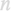
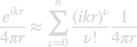

Working principle
The evaluation of the single and double layer potentials needed for the Calderon matrix is performed using an integration engine.
Contents
Integration engine and series expansion
When calling galerkin.bemsolver without further specification, the BEM solver uses the default engine.
% default engine for BEM solver
engine = galerkin.pot1.engine( PropertyPairs );
Alternatively one could also set up an engine such as
engine( 1 ) = galerkin.pot1.std( PropertyPairs ); engine( 2 ) = galerkin.pot1.refine2( PropertyPairs ); engine( 3 ) = galerkin.pot1.duffy2( PropertyPairs ); % pass engine to BEM solver bem = galerkin.bemsolver( tau, 'engine', engine );
In the following we describe the various engine components in more detail. For the engine elements with refinement, it is sometimes convenient to supply an order parameter

for the Taylor expansion of the Green function

With this, the refined single and double layer potential elements have to be evaluated only once. Note that in the program the exponential is expanded around the distance between the centroids of the boundary elements rather than zero.
std
Default integrator for all pairs of boundary elements.
% initialization of default integrator for all pairs of boundary elements % 'rules' - quadrature rules obj = galerkin.pot1.std( PropertyPairs ); % apply quadrature rules to boundary elements TAU1 and TAU2 obj = set1( obj, tau1, tau2 ); % evaluate integration for given wavenumber K1 % data.SL - single layer potential % data.DL - double layer potential data = eval2( obj, k1 );
refine1
Refinement integrator for selected pairs of boundary elements w/o series expansion.
% initialize refined integration w/o series expansion % 'rules' - quadrature rules for refined integration % 'relcutoff' - relative cutoff for refined integration, see bdist2 obj = galerkin.pot1.refine1( PropertyPairs ); % apply quadrature rules to boundary elements TAU1 and TAU2 obj = set1( obj, tau1, tau2 ); % evaluate integration for given wavenumber K1, overwrite previously % computed elements data.SL and data.DL % data.SL - single layer potential % data.DL - double layer potential data = eval2( obj, k1, data );
refine2
Refinement integrator for selected pairs of boundary elements with series expansion.
% initialize refined integration with series expansion % 'order' - order for series expansion % 'rules1' - quadrature rules for refined integration % 'rules2' - quadrature rules for remaining integration % 'relcutoff' - relative cutoff for refined integration, see bdist2 obj = galerkin.pot1.refine2( PropertyPairs ); % apply quadrature rules to boundary elements TAU1 and TAU2 obj = set1( obj, tau1, tau2 ); % precompute elements for series expansion obj = eval1( obj ); % evaluate integration for given wavenumber K1, overwrite previously % computed elements data.SL and data.DL % data.SL - single layer potential % data.DL - double layer potential data = eval2( obj, k1, data );
duffy1
Refinement integrator for identical or touching pairs of boundary elements using a Duffy transformation w/o series expansion.
% initialize refined Duffy integration w/o series expansion % 'nduffy' - number of Legendre-Gauss points for Duffy integration obj = galerkin.pot1.duffy1( PropertyPairs ); % apply quadrature rules to boundary elements TAU1 and TAU2 obj = set1( obj, tau1, tau2 ); % evaluate integration for given wavenumber K1, overwrite previously % computed elements data.SL and data.DL % data.SL - single layer potential % data.DL - double layer potential data = eval2( obj, k1, data );
duffy2
Refinement integrator for identical or touching pairs of boundary elements using a Duffy transformation with series expansion.
% initialize refined integration with series expansion % 'order' - order for series expansion % 'nduffy' - number of Legendre-Gauss points for Duffy integration % 'rules2' - quadrature rules for remaining integration % 'relcutoff' - relative cutoff for refined integration, see bdist2 obj = galerkin.pot1.duffy2( PropertyPairs ); % apply quadrature rules to boundary elements TAU1 and TAU2 obj = set1( obj, tau1, tau2 ); % precompute elements for series expansion obj = eval1( obj ); % evaluate integration for given wavenumber K1, overwrite previously % computed elements data.SL and data.DL % data.SL - single layer potential % data.DL - double layer potential data = eval2( obj, k1, data );
smooth
We also provide an engine class using an analytic integration for the singular term, as discussed in H�nninen et al., PIERS 63, 243 (2006). However, the results appear to be not overly accurate and we thus suggest to not use the smooth integration class.
Examples
- democalderon01.m - Compute and plot single layer potential for nanosphere.
Copyright 2022 Ulrich Hohenester